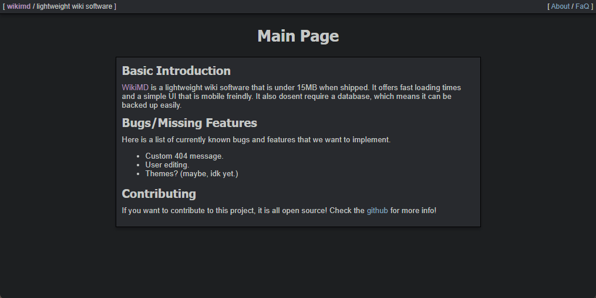

Brody King
Brody King
Lightweight wiki software.
/projects/wikimd/
Last modified on June 21, 2022
WikiMD lets you create a wiki site in minutes with relative ease. All you have to do is download the source code, start your web server, and your site is already running! No need to install anything or create any databases! This is because all the content is stored in .md files that can be found in /data/
To continue reading the docs, please check the github repo